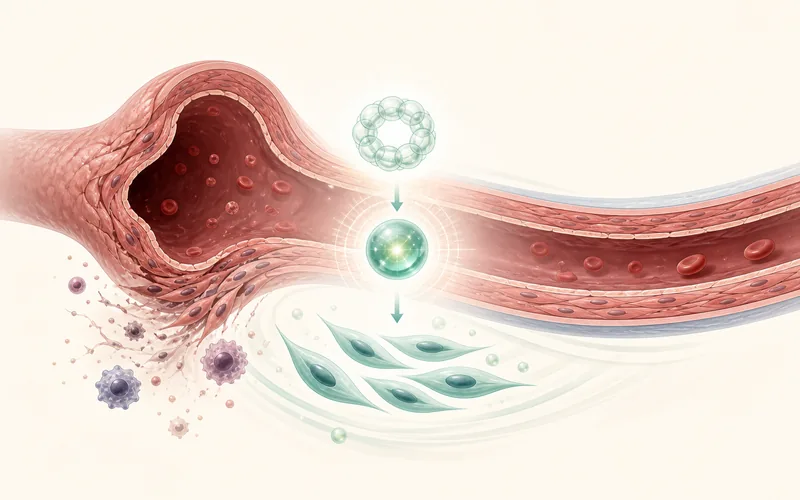
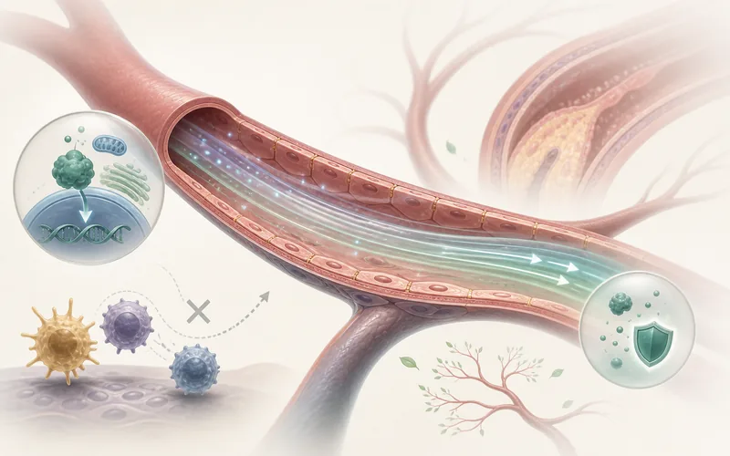
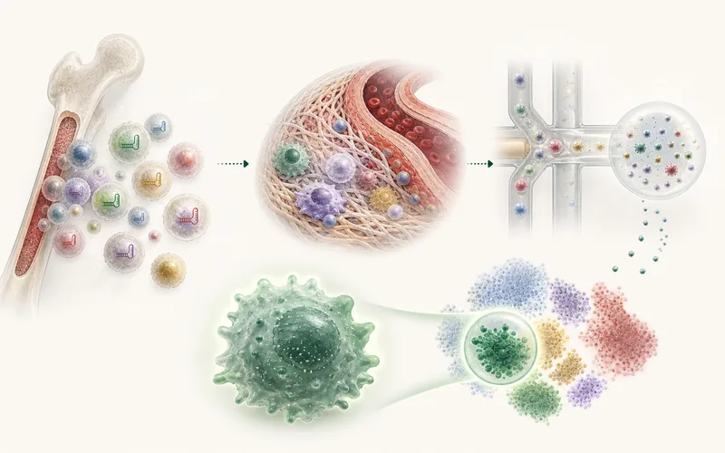

动脉瘤发病机制与治疗靶点
聚焦主动脉瘤这一高致死性血管扩张疾病，解析血管平滑肌、巨噬细胞、血管周围脂肪和遗传变异如何共同驱动病变形成与破裂风险。
- 发现平滑肌 TFEB-BCL2 轴保护腹主动脉瘤，并提出环糊精激活 TFEB 的干预策略。
- 通过 GWAS/TWAS 与机制实验揭示 TCF7L2 参与胸主动脉瘤发生。
- 解析 AngII 对不同部位 PVAT 的空间异质性重塑。
Cardiovascular & Metabolic Disease Research
南方科技大学医学院 · 药理学系
助理教授，博士生导师
探索血管稳态与心血管代谢疾病的分子机制，结合遗传学、多组学与体内功能筛选，寻找新的治疗靶点与药理干预策略。
Profile
鲁昊骋博士本科毕业于北京大学医学部临床医学专业，并获北京大学国家发展研究院经济学双学位；2019 年获美国密西根大学生理学博士学位，随后在密西根大学内科系从事博士后研究。现任南方科技大学医学院药理学系助理教授。
研究长期围绕主动脉瘤、动脉粥样硬化、代谢异常和血管细胞稳态展开，强调从人群遗传学、多组学图谱、动物模型和药物干预四个层面连接疾病机制发现与转化验证。



Research
聚焦主动脉瘤这一高致死性血管扩张疾病，解析血管平滑肌、巨噬细胞、血管周围脂肪和遗传变异如何共同驱动病变形成与破裂风险。
研究血流剪切力、内皮炎症、脂质代谢和糖代谢异常如何改变血管稳态，寻找连接心血管疾病与代谢疾病的关键分子节点。
面向临床治疗瓶颈，开发体内功能筛选技术并推进候选药物靶点验证，形成从高通量发现到疾病模型干预的转化研究链条。
Publications
56 篇发表论文 · 更新于 2026年10月26日
NCBI Bibliography# 共同第一作者 · * 通讯作者（含共同通讯）
56 篇论文
2026;11(12):e195681 · PMID: 42060473
2026;6(2):142-161 · PMID: 42078196
2026;15(4):e047590 · PMID: 41676939
2026;138(4):e327048 · PMID: 41532295
2025;12(48):e12227 · PMID: 41058009
2025;182(20):4926-4943 · PMID: 39359016
2025;152(12):862-881 · PMID: 40762097
2025;13(6):1399 · PMID: 40564118
2025;45(4):523-540 · PMID: 39945066
2025;12:1533138 · PMID: 40336639
2024;38(6):1215-1222 · PMID: 37212950
2024;23(1):381 · PMID: 39462409
2024;15:1347112 · PMID: 38601164
2023;42(10):113171 · PMID: 37768825
2023;8(14):e171661 · PMID: 37289544
2023;8(11):e167041 · PMID: 37079380
2023;26(1):105769 · PMID: 36594018
2023;601(2):255-256 · PMID: 36482858
2022;132(21):e158309 · PMID: 36066968
2022;122(5):777-788 · PMID: 34428834
2022;178:106183 · PMID: 35306139
2022;118(2):475-488 · PMID: 33538785
2022;237(1):489-506 · PMID: 34661916
2021;10(24):e023601 · PMID: 34796717
2021;24(11):103196 · PMID: 34746691
2021;35(5):939-951 · PMID: 32671602
2021;108(9):1578-1589 · PMID: 34265237
2021;36(4):109420 · PMID: 34320345
2021;35(3):637-654 · PMID: 33856594
2021;117(5):1402-1416 · PMID: 32678909
2021;6(5):e141673 · PMID: 33507881
2021;41(2):783-795 · PMID: 33297755
2021;9:689469 · PMID: 34095155
2021;17(1):1-382 · PMID: 33634751
2021;63:103207 · PMID: 33418500
2020;12(572):eaaz2841 · PMID: 33268508
2020;11(1):4093 · PMID: 33097703
2020;40(10):2494-2507 · PMID: 32787523
2020;142(5):483-498 · PMID: 32354235
2019;51(6):224-233 · PMID: 31074702
2019;129:293-302 · PMID: 30641087
2019;41:62-72 · PMID: 30772307
2019;39(3):402-412 · PMID: 30602303
2018;122(7):945-957 · PMID: 29467198
2018;8(1):2360 · PMID: 29403061
2017;10(464):eaah4214 · PMID: 28143903
2016;150(5):1208-1218 · PMID: 26774178
未找到符合条件的论文。
Experience
助理教授 / 副研究员，博士生导师
博士后，导师 Y. Eugene Chen 教授
博士学位，导师 Y. Eugene Chen 教授
临床医学学士；经济学双学位
Funding & Honors
Contact
欢迎联系科研合作、学生培养与学术交流。